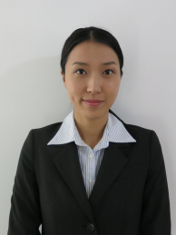

At Stem Capital Partners, we believe in fostering a culture of teamwork, communication and integrity. Our greatest assets are our people and our reputation. We strongly believe in these core principles and apply them to our relationships with our portfolio companies and our investors.
Teamwork
We believe that we can achieve higher success by working collaboratively and flexibly. We strive to create a flat organizational structure, where everyone’s voice is heard.
Communication
We believe in open communication and highest ethical standards to be the core of the organization. We value and operate with full transparency.
Integrity
We believe in the highest importance of integrity. We don’t compromise the character of the individual or the firm for economic gains.
We want to work with companies which demonstrate similar values.
Name: Philip Lynch
Title: Founding Partner
PROFESSIONAL BACKGROUND
- 25 years as an investment banker in Asia, Europe, US and Middle East
- 21 years at Lehman Brothers and subsequently 4 years at Nomura
- 15 years in Hong Kong working throughout Asia Pacific
- Senior Roles at Lehman Brothers
- Co-head of Asia Pacific Investment Banking 1999-2002
- Head of European Financing (ECM, DCM, Lev Fin, Private Derivatives, Corporate Broking) 2003-2006
- Co-head of European Equities 2007-2008
- Senior Roles at Nomura
- CEO Middle East and Africa 2008-2009
- CEO Asia Pacific and Middle East 2010-2012
SELECTIVE TRANSACTION EXPERIENCE
- Transaction experience from Analyst to Head of IBD
- Numerous landmark transactions and awards with over $200 billion of deal execution
- Privatizations of major utilities in Indonesia, Thailand, Singapore, China and India
- $60 billion restructuring of Indonesia’s bank sector
- $9.6 billion rights issue and placement for Carlsberg
- $14 billion overnight market purchase by Chinalco of Rio-Tinto shares (the largest dawn raid in history)
- $5 billion structured equity derivative, the largest ever executed in Asia
PERSONAL BACKGROUND
- Graduated from Yale University
- Married with four children
- Significant community involvement including local rugby and football clubs, the boards of the Yale Rugby Association and the Chinese International School PTA and various philanthropic endeavors

Name: David Douglas
Title: Senior Advisor
PROFESSIONAL BACKGROUND
- 25 years as an investment banker in Asia and Europe
- Worked at Barclays, Credit Suisse, Lehman Brothers and Standard Chartered Bank (HK)
- 10 years in Hong Kong working throughout Asia Pacific
- Senior Roles
- Head of Equity Capital Markets Asia (2005-2008) at Lehman Brothers
- Global Head of ECM at Standard Chartered (2009-2013)
- Additional role as CFO of an agri-buisness focused on the Ukraine
SELECTIVE TRANSACTION EXPERIENCE
- Numerous high-profile transactions across Asia and Europe
- Acted and advised landmark Asian IPOs: ICBC, ABC, Citic Bank
- Worked with the biggest and most demanding clients globally: Tata Group, French government, Korean agencies
- Raised $950mm for the San Miguel Group in a combined CB and placement, a record for the Philippines
- Managed over 30 transactions in the Real Estate and REIT sector while at Standard Chartered
PERSONAL BACKGROUND
- Graduated from Oxford University and INSEAD
- Married with two children
- Experienced cyclist with many thousands of kilometers ridden in tours and races. Most recently rode the Marmotte through the French Alps raising 130,000 euros for 1001 Fontaines, a NGO which brings clean water to rural Cambodians

Name: Sarah Chang
Title: Vice President
PROFESSIONAL BACKGROUND
- Joined Stem Capital Partners in 2014
- 4 years as an investment professional in US
- 2 years at Health Evolution Partners, a $500M middle-market private equity firm
- 2 years at Goldman, Sachs & Co. Investment Banking Division
SELECTIVE TRANSACTION EXPERIENCE
- ~$50M equity investment in American Optical Services
- ~$50M equity investment in CenseoHealth
- $900M sale of ZymoGenetics
- $250M private placement for manufacturing company serving the aerospace industry
- Divestiture of the aircraft maintenance division of an industrials conglomerate for an undisclosed amount
PERSONAL BACKGROUND
- Graduated from UC Berkeley, Haas School of Business
- Speaks fluent Korean

Name: Sissi Wang
Title: Analyst
PROFESSIONAL BACKGROUND
- Joined Stem Capital Partners in 2013
- Responsible for research and financial modeling
PERSONAL BACKGROUND
- Graduated with a Bachelors and Masters from Hong Kong University of Science and Technology in Electronic and Computer Engineering
- Speaks native Mandarin and Cantonese
- Passed CFA Level II Exam